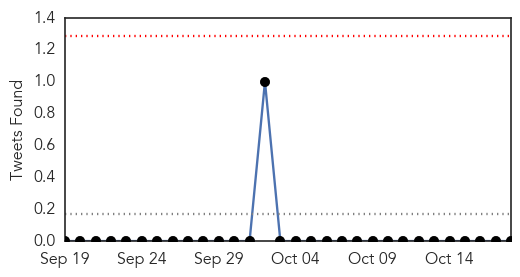
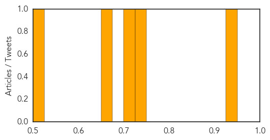

Ebola
30-Day Web Trend
15 alerts, 1 warnings

30-Day Twitter Trend
14 alerts, 4 warnings

Article Locations

Article Confidences

Top Articles:
- 1.000
- WHO: Ebola Deaths Top 4,550
- 1.000
- UN pleads for more money to combat Ebola as fears mount
- 1.000
- Keeping Ebola away from Asia - Regional
- 1.000
- Latest Ebola News: WHO says Senegal's Ebola outbreak has ended
- 1.000
- Containing Ebola in Africa
- 1.000
- What is Ebola? Facts and symptoms explained
- 1.000
- 'No country is safe from Ebola'
- 1.000
- U.S. Ebola patient dies
- 1.000
- Mission Unaccomplished: Containing Ebola in Africa
- 1.000
- Ebola's spread stokes fears about U.S. preparedness
- 1.000
- The Philadelphia Tribune: Commentary
- 1.000
- Health care workers monitored after Ebola case: News
- 1.000
- Some Ebola experts worry virus may spread more easily than assumed
- 1.000
- Ebola death toll shoots past 4,500 mark
- 1.000
- We’re losing fight against Ebola - World Bank
- 1.000
- Should Americans be worried? No. And yes.
- 1.000
- Obama Considers Naming an 'Ebola Czar'
- 1.000
- 1st Dallas Nurse With Ebola Headed to NIH Facility in Maryland
- 1.000
- Ebola fears strike Dallas again: 'We're in the hot zone right now'
- 1.000
- Official information on how you can and can`t get Ebola
- 1.000
- WHO: Senegal Is Officially EBOLA-Free : Trending News : Jobs & Hire
- 1.000
- Ebola outbreak over in Senegal
- 1.000
- Ebola outbreak could be 'definitive humanitarian disaster of our generation', warns Oxfam
- 1.000
- Ebola outbreak: World Health Organisation botched initial handling
- 1.000
- CDC Chief Faulted Over Confusing Ebola Messages
- 1.000
- Global Research - Centre for Research on Globalization
- 1.000
- Taking on Ebola fears with facts
- 1.000
- 1st Dallas Nurse With Ebola Headed to NIH Facility in Maryland
- 1.000
- U.S. health agency chief faulted over confusing Ebola messages
- 1.000
- Obama names Ebola 'czar,' bolsters Texas response
- 1.000
- 'Everybody is to blame' for spread of Ebola
- 1.000
- "Ebola is scary, but panic is premature" by Foss Forward
- 1.000
- Mission Unaccomplished: Containing Ebola in Africa
- 1.000
- What's more disturbing than Ebola? The commentary
- 1.000
- Here's how to produce strong Ebola stories
- 1.000
- WHO: Ebola Deaths Top 4,550
- 1.000
- Our say: Ebola a cause for concern, not panic
- 1.000
- Ebola fears strike Dallas again: 'We're in the hot zone right now'
- 1.000
- WHO: Ebola Deaths Top 4,550
- 1.000
- Ebola crisis: US cruise ship refused permission to dock in Mexico after health worker isolated amid fears of contact with virus
- 1.000
- Mission Unaccomplished: Containing Ebola in Africa
- 1.000
- An Ebola travel ban would be completely unprecedented – here’s why
- 1.000
- Did SARS Prepare East Asia for Ebola?
- 1.000
- Will Ebola fears spark international travel ban?
- 1.000
- How is Asia preparing for Ebola?
- 1.000
- Sudan Vision Daily
- 1.000
- Mission Unaccomplished: Containing Ebola in Africa
- 1.000
- Why an Ebola travel ban would be totally unprecedented
- 1.000
- Obama Urges Calm in Ebola Scare, Opposes Travel Ban
- 1.000
- Obama names Ebola 'czar' as West Africa death toll rises
Showing top 50 articles...
Top Tweets:
- 0.955
- UN: We botched response to the Ebola outbreak http://t.co/ABXvlC0dUi TackleEbola
- 0.863
- Our next EbolaFact is about why health workers wear protective gear if Ebola virus isn’t airborne. http://t.co/cEzVkqPGgK
- 0.863
- Our next EbolaFact is about why health workers wear protective gear if Ebola virus isn't airborne. http://t.co/7V7zJzqs6Y
- 0.834
- RT: Our next EbolaFact is about why health workers wear protective gear if Ebola virus isn't airborne. http://t.co/7V7zJzqs6Y
- 0.827
- Ebola is spread through droplets. If person w/Ebola sneezes & saliva/mucus contacts person’s eyes/nose/mouth, it may be spread
- 0.808
- How Did Nigeria Quash Its Ebola Outbreak So Quickly? http://t.co/eiHJWvebwq
- 0.802
- RT: @MandySkogebo Ebola is spread through droplets. If person w/Ebola sneezes & saliva/mucus contacts person’s eyes/nose/mouth, it …
- 0.790
- WATCH: Ebola: "We are putting in place foundations of very powerful response." UN on MSF critique. Filmed by
- 0.754
- Health aid should balance building health systems & tackling specific diseases http://t.co/VC98xNuX8g malaria ebola
- 0.753
- Expert: Ebola virus no match for U.S. health community http://t.co/JsuyX1lXt7 TackleEbola http://t.co/qEXunxAX0e
- 0.733
- Obama names Ebola 'czar' as West Africa death toll rises http://t.co/BXRCtI9miU
- 0.731
- Sierra Leone announces Ebola response shake-up http://t.co/2vOzyHPm7u
- 0.693
- AFD Blog `@CDCgov: Review of Human-to-Human Transmission of Ebola Virus' http://t.co/S1yomXDABW
- 0.683
- RT: Ebola outbreak 'running much faster' than response http://t.co/XZKPpkDtiK
- 0.671
- Yes, Ebola has been found in sweat. But it's very low risk and not commonly thought as a body fluid that would transmit Ebola.
- 0.634
- Ebola is usually detectable in patients’ blood at time of fever & symptom onset although virus levels at the time of fever & (1/2)
- 0.632
- Currently, routine testing for Ebola is not available for pets. More info about Ebola & pets: http://t.co/UeS2fzQeAu
- 0.624
- For WHO to declare an Ebola outbreak over, a country must pass through 42 days w/ no new cases detected: http://t.co/LWXhV30wgP
- 0.624
- For WHO to declare an Ebola outbreak over, a country must pass through 42 days w/ no new cases detected: http://t.co/LWXhV30wgP
- 0.617
- RT: WHO officially declares the Ebola outbreak in Senegal over and commends the country on its diligence to end the transmission of …
- 0.526
- We'e putting in place foundations of very powerful response. to Ebola, @UNMEER's says. When are they going to build house?
- 0.519
- Health Worker Who May Have Had Contact With Ebola Is on Cruise Ship http://t.co/61def5EBqj
Cholera
30-Day Web Trend
0 alerts, 0 warnings

30-Day Twitter Trend
0 alerts, 0 warnings

Article Locations

Article Confidences
Top Articles:
- 0.940
- Suspected cases of Cholera recorded in Bawku
- 0.737
- USAID supports fight against cholera
- 0.716
- Ghana, Business Advice, Jobs, News, Business Directory, Real Estate, Finance, Forms, Auto
- 0.660
- Keep calm and address Ebola: a brief history of pandemics at The Spectator
- 0.521
- 26 Arrested for defaecating into drains
Top Tweets:
-
No tweets found for Oct 18, 2014